“WordPress Preloader Unlimited” Documentation by “Pixiefy” v2.5
“WordPress Preloader Unlimited”
Created: 01 January 2015
By: Pixiefy Team
Email: pixiefytheme@gmail.com
Thank you for purchasing our plugin. If you have any question(s) or problem(s) that is/are beyond the scope of this help file, please feel free to email me via my user page contact form here. Thank you so much!
Table of Contents
A) About the plugin - top
WordPress Preloader Unlimited is an ultimate plugin for preloader for your wordpress website. This plugin will enable awesome Preloaders to your site.
You can choose from Five different options to change different types of Preloader. You can choose from Image Options, CSS Options, Pace jQuery Options, Special Options and you can cteate Your Custom Preloader too with this plugin. In this documentation, we'll cover enough areas of the option panel for you to control the plugin effectively. Lets began:
B) General Settings - top
(1) Set Preloader Where you want
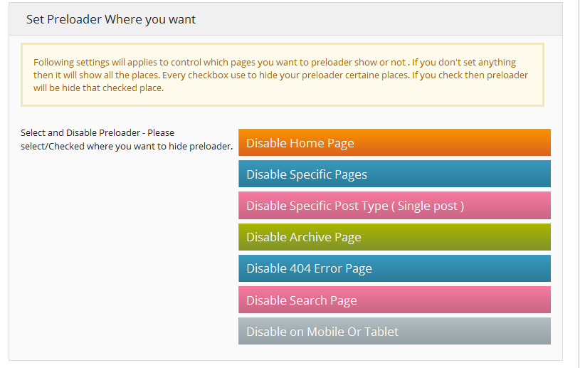Every checkbok for disable certain places, means if you select Home/Front Page checkbox then Preloader will be hide in home page but you want to display only home page then you have to check all other checkbox except Home/Front Page one.
So where you want to hide checked checkbox and remain unchecked to display preloader whanted places
(2) Animation Settings
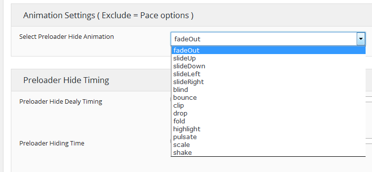Just play with animation settings options and check the changes from frontend
(3) Preloader Hide Timing
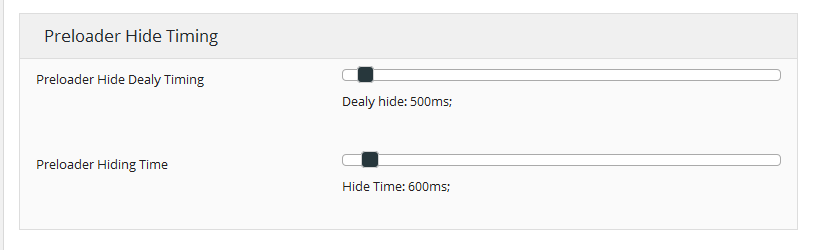This option to delay timing to hide preloader. Just play with animation settings options and check the changes from frontend
C) Installation - top
Installing the plugins is just like installing other WordPress plugins. If you don't know how to install plugins, please review the two options below:
Install by ZIP File
- From your WordPress dashboard, choose 'Add New' under the 'Plugins' category
- Select 'Upload Plugin' from the top of the page.
- From here, click "Choose File" and browse for the zip file included in your plugin purchase titled 'wp-preloader-unlimited.zip' and click the 'Install Now' button
- Once installation is complete, activate the plugin to enable its features.
Install by FTP
- Find the directory titled 'wp-preloader-unlimited' and upload it and all files within to the plugins directory of your WordPress install (/WORDPRESS-DIRECTORY/wp-content/plugins/) [e.g. www.yourdomain.com/wp-content/plugins/]
- From your WordPress dashboard, choose 'Installed Plugins' option under the 'Plugins' category
- Locate the newly added plugin and click on the 'Activate' link to enable its features.
D) Configuration - top
After installation, the plugin will add a menu item called "WPPU".
In this Menu, you can configure your Preloaders as you want it. You need to choose one preloader option from the 5 options (including Your Custom Preloader) at every options top button. Please select wich option you want to enable from Select Which Options You Want to enable.
please remember if you want to active any options as your preloader then you have to select that options by every options top button by click and then save the form. and if you want change current options then select what you want to enable then it will enable automatically like radio button.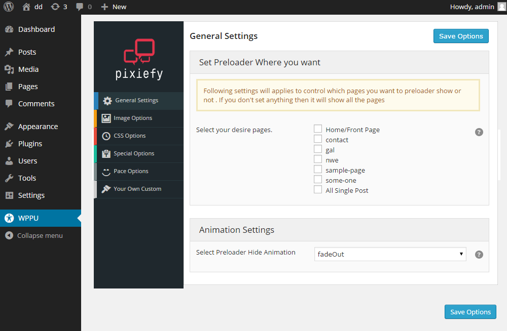
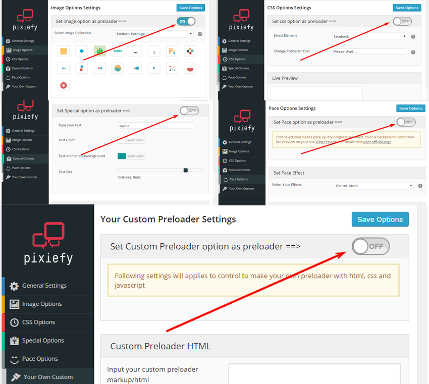
If you want to change any options you can easily do this just go to options tabs page and customize yourself with mulitiple options.
(1) Image Options
You can choose different Image packages from "Image Collection" and then select an image by click and see change in live preview. You can change Background Size Selector and Background Color too. There is an option to upload your own preferred image too. After uploaded your custom image click that image like others do and see change in live preview.
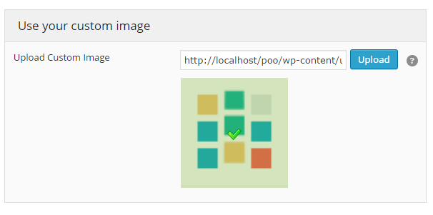
if your image are too big or small you can use custom background size option to modify your exact image size that you need.
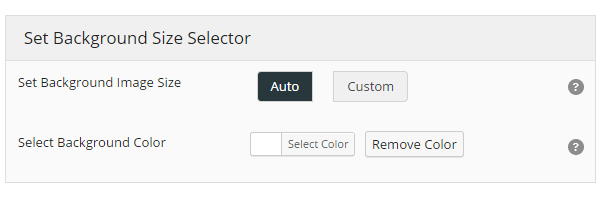

Now you can easily add any image you want. So, its UNLIMITED
please remember if you want to active image options as your preloader then you have to select image options top button from the top and save the form.
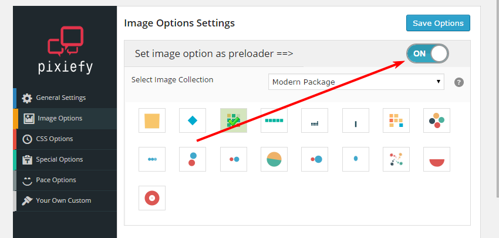
(2) CSS Options
This one is a package of CSS preloader.
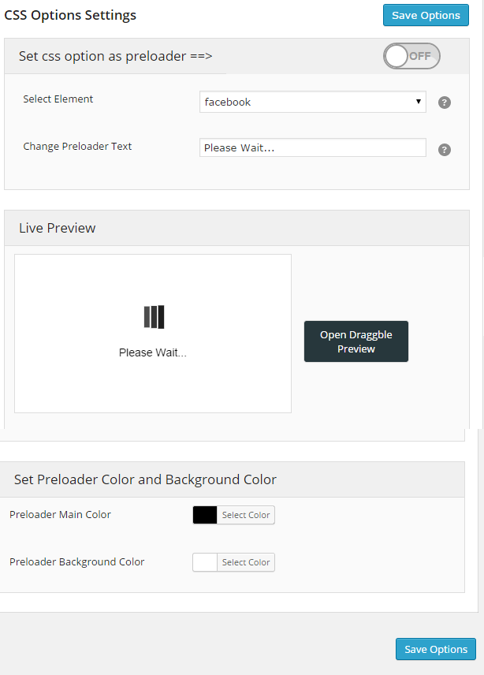
You can choose from the css element and you can change the color of the preloader too. There is an option to change the text under css preloader too. Just change options and see in live preview
please remember if you want to active CSS options as your preloader then you have to select CSS options top button from the top and save the form.
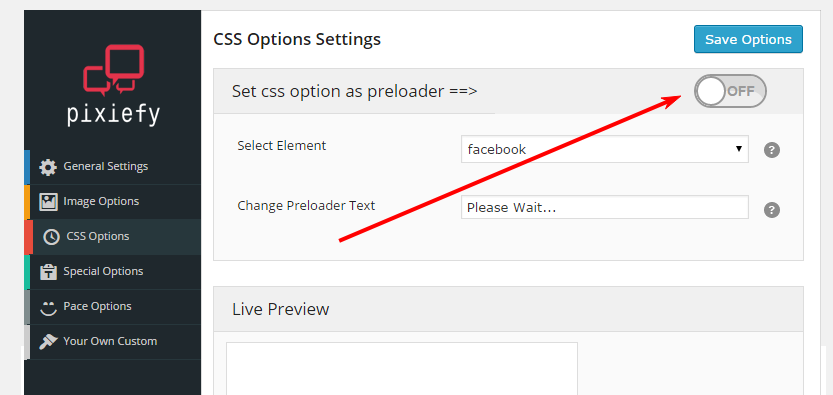
(3) Special Options
WPPU can with an unique preloader idea with full dynamic options.
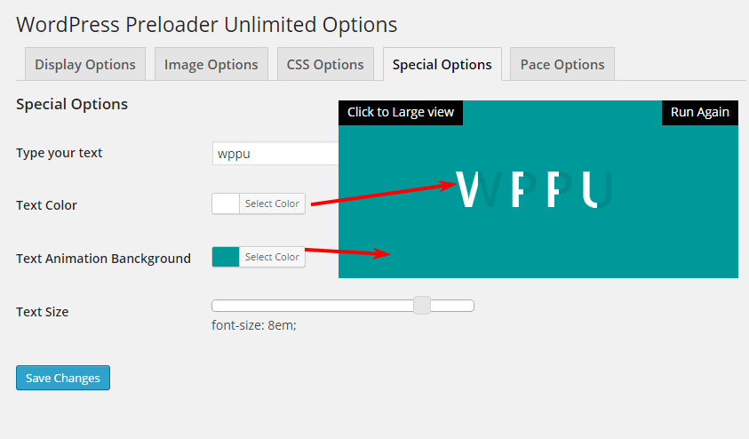
You can change the Text, Text color, Font Size and Background colors with this preloader option. Just change and see in live preview and there is also large preview option just click to large view
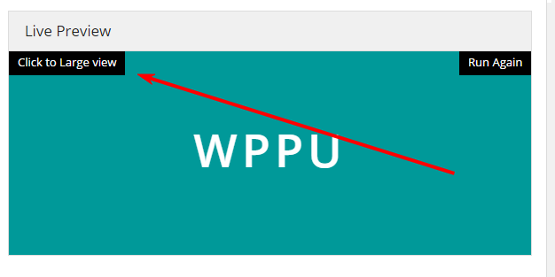
please remember if you want to active Special options as your preloader then you have to select Special options top button from the top and save the form.
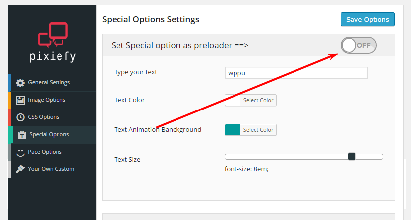
(4) Pace Options
We have added a very special preloader option to make it more effective. You can configure your preloader with one of the most popular Github Preloader project name "Pace".
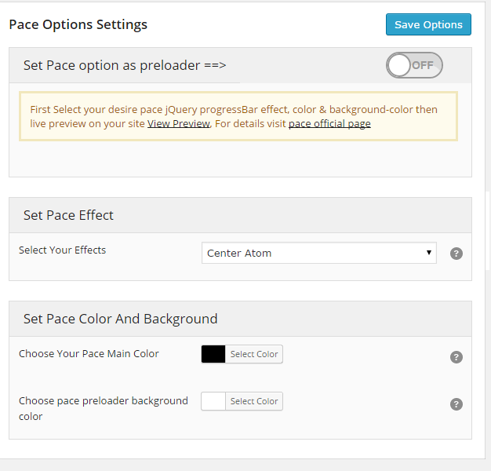
Select from the effects, choose colors of the preloader animation and Background etc. and then live visit your site and see your preloader
please remember if you want to active Pace options as your preloader then you have to select Pace jQuery top button from the top and save the form.
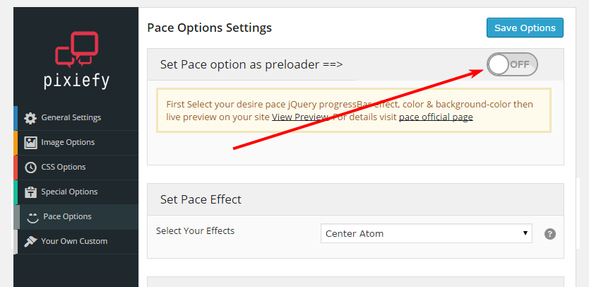
(5) Custom Preloader Options
If you have coding skills, you can develop your own preloader too with this plugin. You can insert your HTML, CSS or script/js codes and get your own designed preloader. You will get the fields by selecting "Your Custom Preloader" from your own customr tab.
please remember if you want to active Custom Preloader options as your preloader then you have to select Your Custom Preloader and save from your own customr
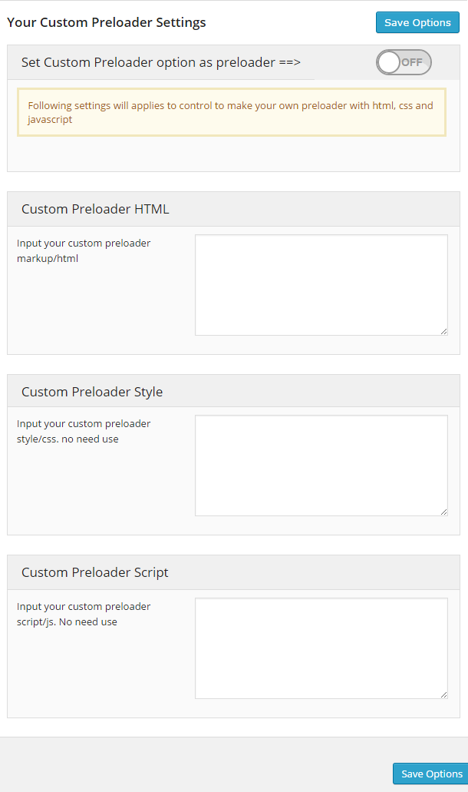
E) Examples - top
(1) Image Options Example
(2) CSS Options Example
(3) Special Options Example
(4) Pace Options Example
Or you can see live by clicking here.
F) Sources and Credits - top
Once again, thank you so much for purchasing this plugin. As I said in the beginning, I'd be glad to help you out if you have any question(s) related to this plugin. I'll try my best to assist. If you have a more general question relating to the themes/plugins on ThemeForest, you might consider visiting the forums and asking your question in the "Item Discussion" section.
Pixiefy